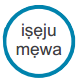
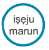

Ìlépa Ìdàgbàsóké Tó Dúró Ṣinṣin (SDGs)
“Ayé yìí kan náà laní. Kọ̀ sì sí ibọ̀míràn tí a lè lọ. Tí a bá lo ọgbón àtinúdá a wa dáradára, a ò nílò ibọ̀míràn. Tí a bá mójú to o, àti olúkúlùkù ara wa, gbogbo ohun tí a bá fẹ́ ḿbẹ ní ayé yìí”
Ìṣàfhàn Àwọn SDGs
Iṣẹ
Èyí lè wà fún lílò ní àpèjọ akẹ́kọ̀ ọ́, àsìkò olùkọ́ tàbí iṣẹ́ ṣíṣe nínú ẹ̀ kọ́ kíkọ
Láti ṣe ìwadìí síwájú si
Fún àlàyé kíkún nípa Àwọn SDGs, kàn sí orí ẹ̀ rọ ayélujára www.globalgoals.org
Gbogbo Asiko:

Àbájáde Ẹ̀ kọ́
Àwọn akẹ́kọ̀ ọ́ lè sàlàyé ohun tí Àwọn SDGs fún àgbáyé jẹ́ àti ìṣe pàtàkì wọn ọn
Fún:
• Ìmọ̀ ràn lórí àti kọ́ nípa Àwọn SDGs
• Ìwé pélébé lórí Àwọn SDGs fún àwọn ọmọdé
• tẹ̀sìwájú tó jinlẹ̀ lórí ìgbáradì fún ẹ̀kọ́ nínú
Àwọn SDGs àti ìtọ́kasí àfkún àwọn ohun èlò
• Ibi Ìṣàfhàn àwọn fọ́ tò SDGs
• Ìrànlọ́ wọ́ ní gbígba àwọn ọmọdé níyànjú láti
gbé ìgbésẹ
Kàn sí: http://worldslargestlesson.globalgoals.org/resources-for-teaching-the-sdgs-in-nigeria/
Ọjọ ori:

Ìgbáradì
Bí ó bá ṣeéṣe, tẹ̀ kí o sì ṣe àfhàn Àwọn SDGs ní iwájú iyàrá ìkàwé tàbí ní orí ẹ̀ rọ aṣàfhàn nípa lílo atọ́kasí kejì tàbí kẹta (appendix 2 or 3). Pèse pátákó ìkòwé láti kọ àbá àwọn akẹ́kọ̀ ọ́. Tẹ̀ tàbí kí o yà ìwé kékèké fún ìdárayá òpin iṣẹ́.
Ìṣàfhàn Àwọn SDGs
Àgbékalẹ 
Gbàrà tí àwọn akẹ́kọ̀ọ́ bá ti wọ yàrá ìkẹ́kọ̀ọ́, ṣe àfhàn ìbéèrè yii –
"Kíni àwọn ìṣòro tí ó ga jùlọ tí ó ń kojú
àwọn ènìyàn ní àwùjọ/orílẹ̀ èdè/gbogbo àgbáyé?”
(Lo eyikeyi)
Gba àwọn akẹ́kọ̀ọ́ níyànjú láti ronú pẹ̀lú ìwòye ẹlómíràn. Bí àpẹẹrẹ, o lẹ̀ sọ wípé
“A fé kí ẹ ronú bí olórí orílẹ̀ èdè!”
Kí àwọn akẹ́kọ̀ọ́ joko ni méjìméjì. Jẹ́kí wọ́n gbìyànjú láti mẹ́nuba àwọn iṣoro t’ótóbi jùlọ tí ó ń kojú agbègbè
wọn, orílẹ̀ èdè wọn tàbí àgbáyé. Gba àbá láti ìsòrí kànkan. Àwọn wọ̀nyí ni a lè kọ sí orí pátákó ìkòwé.
Lo atọ́kasí kinni (appendix 1) fun ìrànwọ́ bí ó bá pọn dandan.
Àwọn SDGS
Fi àwọn SDGs han àwọn akẹ́kọ̀ọ́ nípa ṣíṣe ìtọ́kasí àwọ Ìlépa tàbí àfojúsùn tí ó jẹ mọ́ àwọn ìṣòro tí wọ́n ti
mẹ́nu bà. Ṣe àfwé àwọn àkójọ ìṣòro tí àwọn akẹ́kọ̀ọ́ kọ pẹ̀lú àwọn Ìlépa Ìdàgbàsókè Tó Dúró Ṣinṣin tí a ṣe
àfhàn rẹ̀ níwájú.
Fún àpéjọ àwọn akẹ́kọ̀ọ́, o lè mú kí akẹ́kọ̀ọ́ mẹ́tàdínlógún dúró síwájú kí wọ́n kọ ẹ̀yìn sí àwọ
n ẹlẹgbẹ́ wọn. Ọ̀ kànkan àwọn akẹ́kọ̀ọ́ yóò di ìwé ìléwọ́ kan dání tí a kọ ọ̀kan nínú àwọn SDGs si. Bí ẹnikẹ́ni
bá daba ìṣòro kan, akẹ́kọ̀ọ́ níwájú tí ó bá mú ìlépa tí ó jẹmọ dání, yóò yíjú padà.
Ní Òye SDGS 
Àwọn akẹ́kọ̀ọ́ wo ìwò-àrà Alàgbà Ken Robinson lórí ìfàwòránhán ńlá, ẹ̀rọ kọ̀mpútà tàbí kí wọ́n parapọ̀ lórí jorí láti wò ó lórí ẹ̀rọ alágbèéká http://worldslargestlesson.globalgoals.org/resources-for-teaching-the-sdgs-in-nigeria. Àwọn akẹ́kọ̀ọ́ tún lè ka ìwé ìdárayá láti orí www.globalgoals.org/worldslargestlesson nípa yíyí awẹ́ ojú ẹ̀rọ alágbèéká tàbí ọpọ́n ìmọ̀ (mobile phone or tablet).
Iṣẹ́ Ṣíṣẹ
1. Láti parí ẹ̀kọ́ nà, jẹ́kí àwọn akẹ́kọ̀ọ́ kọ gbólóhùn kan t’óf òye wọn hàn lórí SDGs àti àwọn nǹkan tí ó bá jẹ́
sí wọn. Fún àwọn akẹ́kọ̀ọ́ ní òdiwọ̀n ọ̀rọ̀ tí ó yẹ kí wón lò láti f ọ̀rọ̀ ránṣé lórí Twitter sí Twitter: @WorldsLessonNG #WorldsLargestLessonNG
2. Tẹ̀ tàbí ya àwọn ilà onígunmẹ́rin ọgbọọgba (squares) oní ìwọn sẹ̀ntímítà méjìlá sí sẹ̀ntímítà méjìlá (12cm
x12cm) sí orí tákàdá. Fún àwọn akẹ́kọ̀ọ́ ní tákàdá onígunmẹ́rin ọgbọọgba yii tí a kò kọ ohunkóhun sí kí
wọ́n sì ya àworán apanilẹ́rìn-ín ara wọn gẹ́gẹ́ bíi alágbara. Sọ fún wọn kí wọ́n f ọ̀rọ̀ kún ẹnu àworán nà
irúu ọ̀nà tí wọ́n lè gbà f ran SDGs lọ́wọ́. Gba àwọn ìwé nà kí o ṣe àfhàn an rẹ̀ nílé ìwé, ṣe alabapin rẹ
pẹ̀lú wa lórí Facebook ní @WorldsLessonNG.
Àwọn Ìṣòro tì àwọn ènìyàn ń dojúkọ lóde
òní (lò ó bí ó bá ṣeéṣe)
• Òṣì
• Àìdọ́gba àwọn orílẹ̀ èdè
• Ebi
• Àìlera àti àrùn
• Omi ìdọ̀ tí
• Àìnììmọ́tótó
• Ẹ̀ kọ́ àìpéye — ọ̀ pọ̀ ọmọ ni kòlè lọ ilé-ìwé
• Iṣẹ́ tí kò lérè àti àìtó iṣẹ́
• Ìfàséyìn ọrọ̀ ajẹ́ — àìtó owó fún orílẹ̀ èdè láti ṣe ojúṣe fún àwọn ará ìlú
• Àìdọ́gba laarin akọ àti abọ— àwọn okùnrin àti obìnrin ò ní àǹfàní kan naa
• Ogun, ìjà àti làásìgbò
• Ìbẹ̀ rù boju
• Rúkèrúdò laarin àwọn ènìyàn
• Ìwà ìbàjẹ́ àti àìsí ìdájọ́ òdodo
• Àìní-ìbọ̀ wọ̀ fún ẹ̀ tọ́ ọmọ ènìyàn
• Àìní-ìfọwọ́sowópọ̀ laarin àwọn orílẹ̀ èdè
• Àísí-iná láti gbé ìgbé ayé t’órọrùn
• Àwọn ohun amáyédẹrùn àti ọ̀ nà ẹ̀ rọ ìbára-ẹnisọ̀ rọ̀ yẹpẹrẹ
• Àìsí àbò tó péye ní àwọn ìlú
• Àìdúró ṣinṣin àwọn ìlú nípa lílo àwọn ohun tó ju agbára wọn lọ
• Ìfṣòfò àwọn àlùmọ́nì àti àìsí àtúnlò
• Ìyípadà ojú ọjó
• Kíkó àbàwọ́n bá àwọn òkun àti agbami
• Àwọn ibùgbé tó ti dìbàjẹ́
• Àìní àǹfàní si ẹ̀ rọ ìgbàlódé, kọ̀ mpútà àti ẹ̀ rọ alágbèéká
• Àwọn ènìyàn ò ní ìgbẹ́kẹ̀ lẹ́ nínú ètò àbò tó dájú
• Sísanrajù
• Ẹlẹ́yà mẹ̀ yà
• Dàrúdàpọ̀ nínú ìletò káàkiri